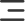

HTML, CSS, 아이콘 자산, 반응형 규칙을 실제로 분석해 foundations, components, patterns 순서로 재구성한 문서입니다.
문서용 UI는 요청대로 Pretendard 기준으로 구성했고, 프로젝트 구현값은 Noto Sans KR, Clash Display, Inter, CSS 변수, utility classes, layout/responsive rules를 기준으로 기록했습니다.
디자인 시스템 분석에 사용한 핵심 소스입니다.
원티드 디자인 시스템처럼 foundations, components, patterns 구조를 따르되 시각 스타일은 요청한 회색 배경 구조로 설계했습니다.
프로젝트 구현 폰트와 실사용 size cluster를 분리해 정리했습니다. 제공된 타입 가이드 구조처럼 Display, Heading, Body, Caption 축으로 다시 묶었습니다.
문서용 기준과 프로젝트용 구현 폰트를 함께 표기합니다.
실제 코드에서 확인된 타이포 스케일입니다.
| Tier | Size | Weight | Usage |
|---|---|---|---|
| Display | 115 / 90 / 80 / 56 | 600 | visual headline, mobile visual |
| Heading | 40 / 32 / 28 / 24 | 700 / 600 | banner, main3, main4, notice titles |
| Body L | 20 / 18 | 500–700 | GNB, card title, hero button label |
| Body M | 16 / 15 / 14 | 400–700 | buttons, notice, schedule, descriptions |
| Caption | 11 / 9 | 600 / 400 | calendar labels, micro meta |
코드의 `:root`와 utility layer를 기준으로 실제 사용 색상을 정리했습니다. 제공된 컬러 가이드처럼 Main, Line, Surface, Neutral, State 그룹으로 분리했습니다.
배너, 액션, 선, 배경, 메타 텍스트에 쓰이는 실사용 팔레트.
utility class와 component spec에 걸쳐 반복되는 값만 추려 foundations로 정리했습니다.
실제로 반복 사용되는 키 스케일.
solid, dashed, repeating line 조합.
짧은 버튼 반응과 길게 변형되는 카드 모션이 공존합니다.
`assets/imgs/icons`에 정의된 실제 아이콘 자산 목록입니다. quick link, 헤더 액션, swiper control, 상태/이동 affordance로 주로 사용됩니다.
실제 파일 기준 12개 핵심 자산.

프로젝트 버튼은 대부분 pill 또는 compact rounded square 패턴에 수렴합니다. 공지, 캘린더, 탭, GNB도 이 축 위에서 동작합니다.
메인 섹션은 대형 shell, rental module, function card, logo tile처럼 비교적 큰 패턴으로 구성되며, 너비와 높이 기준 규칙이 함께 적용됩니다.